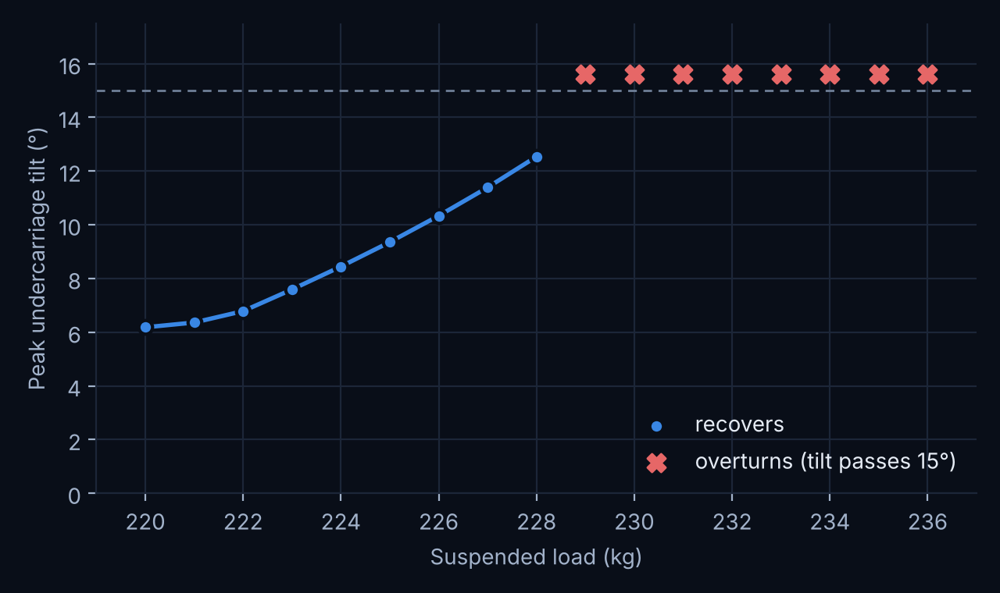
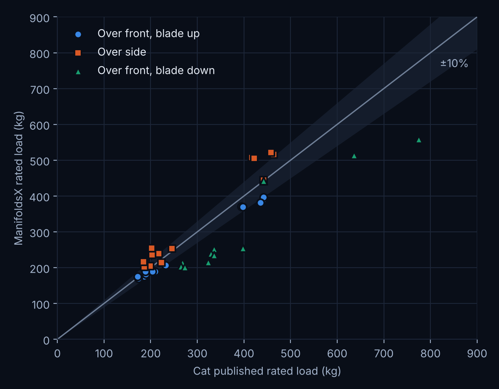
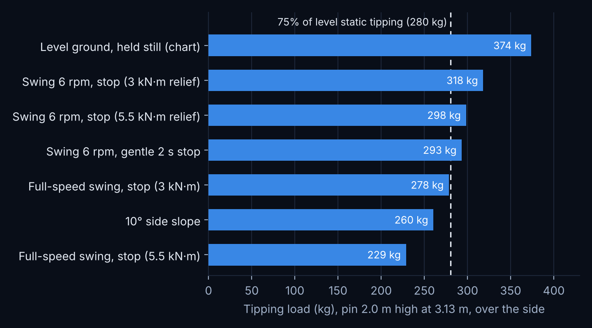
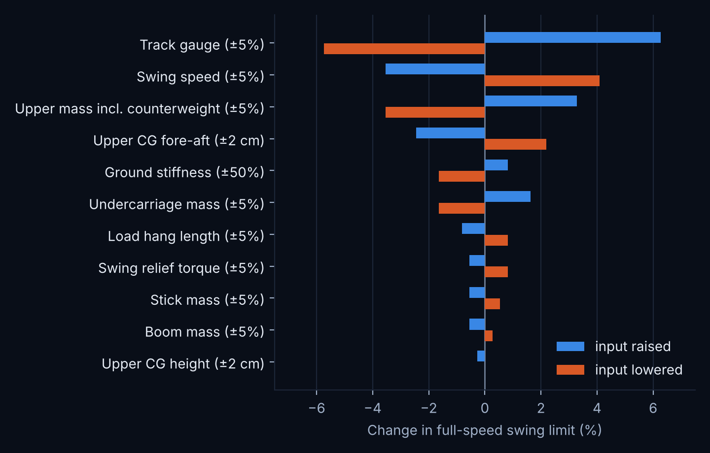

We modelled a 1.7 t mini excavator from public data and computed its lift chart. Over the front it lands within about 10% of the published chart. The same model then rates what a chart cannot: slopes, and a swing that stops with a load hanging from the boom.
The model is the whole machine: 76 track shoes in contact with the ground, rollers riding on the track rails, a slewing upper, boom, stick and hydraulic cylinders. Dimensions come from the public specification sheet of the Cat 301.7 CR. Masses are estimates, and one value, the fore-aft position of the upper's centre of gravity, is fitted to one chart cell. Every dynamic result runs for 30 simulated seconds, and every result was checked against a fixed 1 ms time step.
01 / Dynamic stability
Twenty kilograms apart
A load hangs 1 m below the bucket pin, which sits 2.0 m high at 3.13 m from the swing axis. The machine picks the load up over the front with the blade down, swings 90° to the side at full speed (9.8 rpm), and the operator releases the joystick. The swing relief valve limits how hard the upper can brake.
0.75× playback. Left: 220 kg tilts the machine 6° and it settles back. Right: 240 kg takes it past 15°; the load lands and the machine rests on it with the near track in the air.
The limit is a cliff
Peak tilt rises smoothly from 6° at 220 kg to 12.5° at 228 kg. From 229 kg on, every run overturns. Each limit was also run 5% heavier: all of those rolled past 40°.
The swing torque decides it
The swing motor torque is not public, so we bracket it. With a 5.5 kN·m relief the limit is 229 kg; with 3 kN·m it is 278 kg. A softer relief also starts the swing more gently, so the load swings less.

Full-speed swing and stop, 5.5 kN·m relief, 1 kg steps.
We computed all 39 cells of the minimum-configuration chart. The tipping load comes from loading the bucket pin slowly until the machine tips; the hydraulic capacity from the cylinder forces at the 245 bar relief. As manufacturer charts state, the rated load is the smaller of 75% of tipping and 87% of hydraulic capacity.

Computed against published rated loads. The band is ±10%.
Column
What limits it in the model
Computed vs published
Over front, blade up
Tipping
mean −6.7%, range −12 to +2%
Over side
Tipping or hydraulics
mean +11.2%, range −4 to +26%
Over front, blade down
Hydraulics
mean −24.8%, range −36 to 0%
Over the front with the blade up, the rating depends only on mass and geometry, and public data plus one fitted value reproduce it within about 10%. Over the side the model tips at the outer track edge and reads higher than the chart, which suggests a more conservative tipping line in the published ratings. With the blade down the model is limited by our assumed cylinder geometry; the real geometry would close that gap. The simulated tipping loads agree with a rigid-body moment balance of the same model within −7 to +2%.
03 / Beyond the chart
Slopes and swinging loads
A chart rates level, firm ground and a load held still. At the same lift point we ran the cases it cannot rate: a 10° slope, and the swing stop above at two swing speeds, two relief torques and two ways of stopping.

Tipping load over the side for each case. The dashed line is 75% of the level static tipping load.
A rating at 75% of static tipping leaves a 25% margin. A 10° side slope uses 30% of the static tipping load, and a full-speed swing with a hard stop uses 26 to 39%, depending on the relief torque. Either one alone uses up the whole margin. A swing at 6 rpm uses 15 to 22%. Facing downhill on a 10° slope, the machine tips over the front at 67% of its level-ground load.
04 / Sensitivity
Which inputs matter
We changed one input at a time and recomputed the swing limit to the nearest kilogram: 218 simulations. The ranking shows which numbers a model needs to get right, and which it can estimate.

Change in the full-speed swing limit (229 kg) for each input nudged down and up.
Track gauge dominates: each 1% of gauge is worth about 1.2% of side capacity. Swing speed is the strongest lever an operator has: swinging 5% slower raises the limit by 4%. The upper's mass and the fore-aft position of its centre of gravity come next. Boom and stick mass, the height of the upper's centre of gravity, and a 5% error in the relief torque each move the result by less than 1%.
Numerical checks
What changes with the time step?
30 simulated seconds at the default error-controlled step and at a fixed 1 ms step
Run
Output
Default
1 ms
Straight drive
Mean speed
0.4986 m/s
0.4993 m/s
12° ramp
Height climbed
3.091 m
3.091 m
Dig cycle
Peak boom cylinder force
28.80 kN
28.81 kN
Lift, over side
Tipping load
374.0 kg
374.0 kg
Swing stop, 220 kg
Peak tilt
6.18°
6.18°
Swing stop limit
Overturns at
229 kg
between 225 and 233 kg
All of these agree within 0.2%. One case did not: in a skid-steer turn the default step overstated the turn rate by 27%, because the sliding friction under the shoes was not resolved. Turning runs now use a tighter error tolerance, within 4% of the converged rate. The lift and swing results do not depend on it, since the tracks do not slide before the machine tips.
Limits
What this study does not show
Masses and centres of gravity are estimates; one value is fitted to the published chart.
The swing motor torque and the cylinder geometry are not public. We bracket the torque and assume the geometry.
The ground is firm, with a contact stiffness but no sinkage, and the operator makes no corrections.
Dynamic cases and the sensitivity study use one chart cell.
This is independent work, not affiliated with or endorsed by Caterpillar. Cat and 301.7 identify the public specification and lift chart used as reference data.
Read the complete study
The model, the chart comparison cell by cell, the swing-stop method and checks, the sensitivity study and the time-step study.
With real masses, swing torque and cylinder geometry, the same process produces a full lift chart and stability limits for any configuration. Questions and data are welcome.